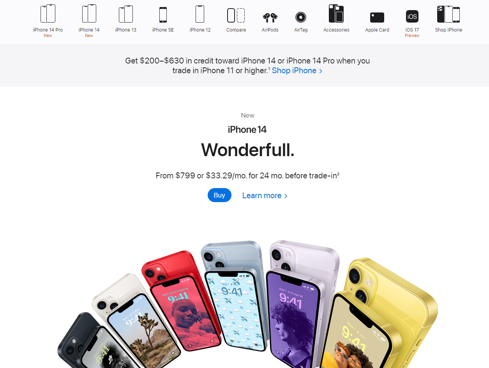
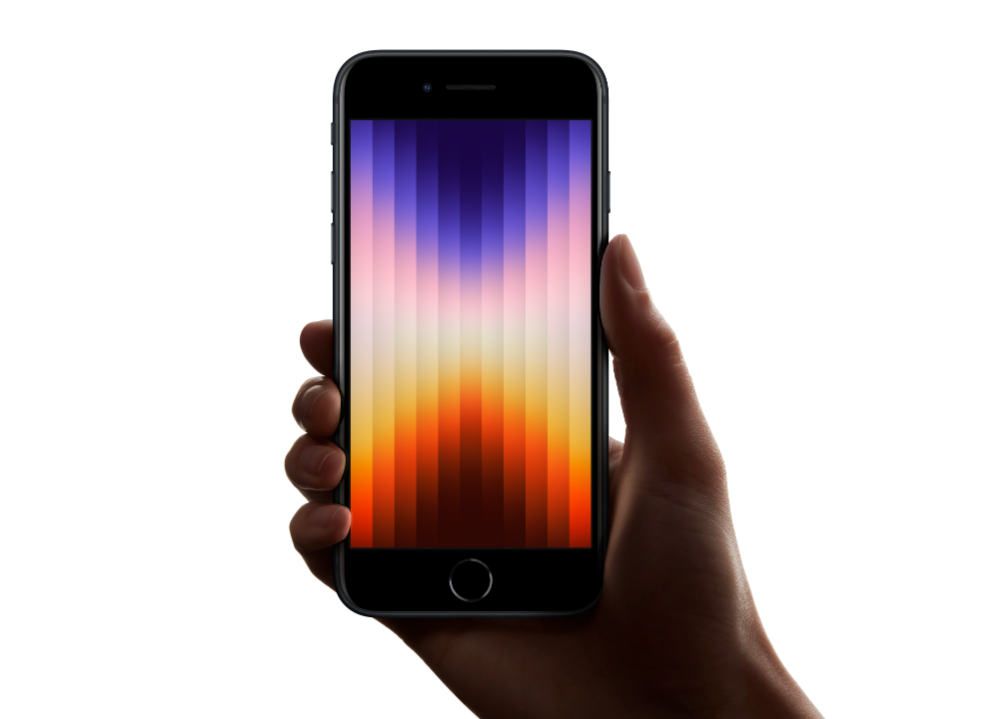
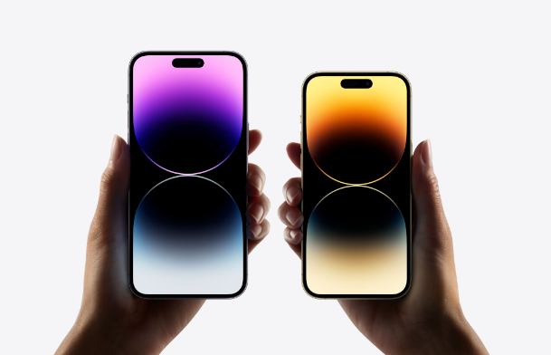
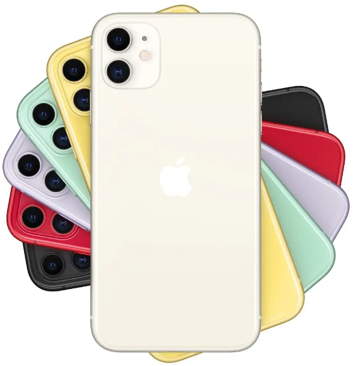

The Best iPhones to Buy in 2023 |
Sachin Chandran Arumugam | 10TH JUNE, 2023 |
Are you a first-time iPhone buyer? Are you upgrading your iPhone and don't know which one to get? It doesn't matter. This article will help you choose the right iPhone to buy. Although as of writing this, the new iPhones will come out in around 3 months, if you're desperate to buy a new phone, you should consider upgrading right now. Otherwise, it's best to wait for the new iPhone. (Note: This article may be updated when the new iPhone comes out.) |
|  |
1. iPhone SE |
The iPhone SE is not just one of the best iPhones, but also one of the best budget phones ever, at just $429 (USD). The 3rd-generation iPhone SE is known as the sucessor of the previous 2020 model of the iPhone SE. With the A15 Bionic chip, 5G service, longer battery life and graphics than the 2020 predecessor model, the iPhone SE experience feels almost as fast as the newer iPhones. The iPhone SE also comes with the nostalagic home button, which was removed from non-SE iPhones in 2017. One thing the SE doesn't have that 2017 or later models have is Face ID or Animoji, instead it has Touch ID and Memoji. |
|  |
Overall, I would recommend the iPhone SE to: people on a budget, children/teenagers that are getting their first phone, people that prefer small phones, and those who love the home button iPhones. If you wish to order an iPhone SE, you can order through the Apple website (or by clicking on this!). |
2. iPhone 14 Pro |
The iPhone 14 flagship is the latest as of June 2023. Starting at $999 (USD), the iPhone 14 Pro's features and components make the price worth it. Some amazing specs of the 14 Pro are: A16 Bionic chip, 48MP camera, up-to 29 hours of video playback, Dynamic Island, and Emergency SOS via satellite. The 14 Pro/Pro Max has a very large display at 6.1" on the 14 Pro, and 6.7" on the Pro Max. The Pro flagship also has water resistance, and Ceramic Shield, which is one of the toughest smartphone glasses ever made. |
|  |
Overall, I would recommend the iPhone 14 Pro/Pro Max to: people with large hands, people that live in an area with weak signal, content creators and technology geeks.. If you wish to order an iPhone 14 Pro/Pro Max, you can order through the Apple website (or by clicking on this!). (Note: you may not be able to buy this iPhone after the 15 flagship releases.) |
And last but not least, the iPhone 11 |
Even though the iPhone 11 flagship is almost 4 years old, the iPhone 11 is still a pretty great phone. With an average price of $350 (USD), this iPhone feels like a new phone. The iPhone 11 has a variety of features, for example: 6.1" display, 12MP (Ultra-wide) Camera, Up to 17-hours of video playback (2 hours more than the iPhone SE), and the A13 Bionic chip. Unfortunately, the iPhone 11 doesn't have a lot of features that the newer iPhone have, like: 5G, Ceramic Shield, 256GB or higher storage, MagSafe charging, etc. But if you're just looking for a phone that can make calls, texts, take great pictures, and be of daily use - this phone is a great phone! |
|  |
Overall, I would recommend the iPhone 11 to: people that don't care what phone they have, children/teenagers, and people that don't use their phone much. Apple stopped supporting/selling the iPhone 11 in 2022, after the release of the 14 flagship. The iPhone 11 should only be bought on authorized resellers. Amazon is a great place where you can still buy the iPhone 11, otherwise you should look for other well-known resellers. |
All of these iPhones are compatible with the upcoming iOS 17. If you wish to find out more about these iPhones, head on over to the Apple website. |